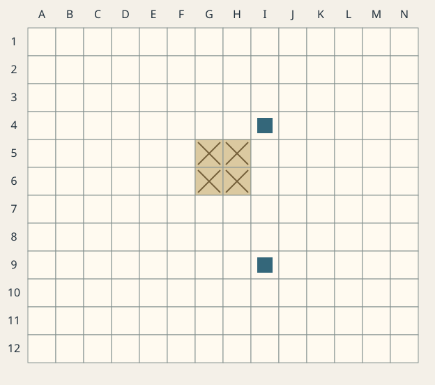

Одинаковые правила, разная история
Все карты совпадают с сеткой нативного пакета: 14 × 12, клетка — 5 футов. G5/H5/G6/H6 — трудная местность; I4/I9 — половинное укрытие. Остальные детали описания декоративны, пока ведущий не изменил поле штатно.
Расстановка и параметры
Начальные клетки героев: B3, B4, B5, B6, C3, C4, C5, C6; штатная подготовленная встреча назначает их присутствующим героям по именам. Противники: L3, L4, L5, L6, M3, M4. Используйте только нужное число фигур. Перед началом герои должны находиться в месте встречи.
Для 3 / 4 / 5 / 6 / 7 / 8 игроков: 2 / 3 / 3 / 4 / 5 / 6 противников, здоровье каждого 12 / 14 / 16 / 18 / 20 / 22. Защита 12; скорость 20 футов; одна ближняя атака +3, 1d4+1 дробящего урона, досягаемость 5 футов.
Враги — простая поддерживаемая модель. Мирные решения и ограничения сцены описаны отдельно; ведущий подтверждает их результат. После первого раунда напомните пути переговоров или отступления. Встречи не запускаются автоматически.
У посетительской черты
Только если в третьем вечере разговор о доступе перешёл к угрозе, герои отказались от предложенного выхода и группа явно согласилась разыграть абстрактное столкновение. Ведущий вручную решает, начинать ли его; никакой автоматической атаки.
Цель и выходы
Вывести участников за проходную с полученной копией или её регистрационным номером. Уход всех желающих, принятие письменного запроса либо добровольное прекращение конфликта завершает сцену; поражение противников не требуется.
Спокойно уйти с номером письма, назначить встречу Вере после смены либо передать запрос через приёмную. Эти варианты дают доступ к тому же содержанию у регистратора. Сдача предмета спора допустима, если участники предпочитают сохранить людей; внешний экземпляр письма остаётся.
Поведение противников
Взрослый сотрудник охраны в обычном заводском пальто. Каноническая ближняя атака — условность настольного столкновения без специальных приёмов; заявленное намерение сторон нелетальное.
Сторожа держатся у границы служебной зоны, требуют покинуть галерею и не преследуют за внешней дверью. Если герои уходят, показывают согласованный пропуск или предлагают письменный запрос, сторожа готовы прекратить конфликт. Никаких скрытых подкреплений или обязательного захвата свидетеля.
Размер группы
Для 3/4/5/6/7/8 игроков соответственно 2/3/3/4/5/6 противников и 12/14/16/18/20/22 хитов у каждого, КД 12, одна ближняя атака +3 на 1d4+1. Базовое число противников — 3, для 4–5 игроков. При 3 игроках только одна группа выхода; при 4–5 роли переговорщика и сопровождающего; при 6–8 пары выбирают разные выходы, сохраняя общий порядок ходов. Числа не превращают выход в проверку силы.


Сетка 14×12, клетка — 5 футов. Трудная местность только в G5, H5, G6, H6 (четыре клетки): сложенные коврики и ящики. Половинное укрытие в I4 и I9: низкие стойки. Внешняя дверь на западе и служебный проход на востоке остаются свободны. Действующего опасного оборудования на поле нет. Выходы и прочие детали задаёт ведущий в описании; на нативном поле дополнительных препятствий нет.
Папка у приёмного окна
В шестом вечере заводские сопровождающие могут попытаться навязать возврат имущества. Столкновение доступно лишь после отказа от мирного рассмотрения заявки и явного выбора группы разыграть угрозу; прибытие посыльного само по себе бой не запускает.
Цель и выходы
Сохранить независимую квитанцию, копию или добровольно сопровождаемого свидетеля и выйти в приёмную комиссии. Сам ящик можно оставить палате под запись; его перенос не обязателен. Согласованный приём, уход или прекращение угрозы завершают сцену.
Передать заверенную копию, зарегистрировать заявку на рассмотрение, попросить комиссию принять материал либо выйти с квитанцией, оставив ящик независимому хранителю. При желании герои добровольно уступают заводскую копию и затем восстанавливают её по внешним экземплярам; это цена времени, а не обязательная драка.
Поведение противников
Взрослый сотрудник административной службы с заявкой на имущество. Его игровой жетон использует ту же условную нелетальную ближнюю атаку; оружие и профессиональная тактика не моделируются.
Сопровождающие пытаются удержать внимание у окна и требуют передачи папки, но соглашаются остановиться при регистрации возражения или вмешательстве Тамары. Они уходят после ясно заявленного отказа и независимой отметки, если герои выбрали переговоры. Не уничтожают автоматически уже сделанные копии.
Размер группы
Для 3/4/5/6/7/8 игроков: 2/3/3/4/5/6 противников, хиты 12/14/16/18/20/22, КД 12, одна атака +3 на 1d4+1. При 3 игроках квитанцию оформляет Сара без отдельного героя; при 4–5 одна пара ведёт человека к выходу; при 6–8 добавляются пары копирования и переговоров, не дополнительные обязательные документы. Каждый может выбрать уход или прекращение угрозы.

Сетка 14×12, клетка — 5 футов. Трудная местность только в G5, H5, G6, H6 (четыре клетки): тележки с пустыми папками. Половинное укрытие в I4 и I9: столы. Приёмное окно находится на западе, вход на востоке, боковой выход ведёт в общий коридор. Запечатанные материалы вне поля; падение жетона не уничтожает их. Выходы и прочие детали задаёт ведущий в описании; на нативном поле дополнительных препятствий нет.
Проход к приёмному столу
Только если в перерыве финального заседания уже возникшее давление переходит к прямой угрозе, а игроки выбирают столкновение после объявления боковой двери и письменной подачи. Ведущий запускает встречу вручную; мирное заседание — полноценный обычный вариант.
Цель и выходы
Довести добровольного свидетеля или закрытую выписку до приёмного стола и сохранить право уйти. Регистрация документа, проход через боковую дверь, прекращение угрозы или безопасное отступление завершают сцену; обязательной победы над всеми нет.
Использовать боковую дверь, передать запечатанную выписку Тамаре, перенести личное выступление в закрытую комнату либо зарегистрировать нарушение порядка и дождаться разведения групп. Свидетель вправе уйти; уже разрешённый документ можно подать без его повторного выступления.
Поведение противников
Взрослый человек, нанятый для давления присутствием и шума. Его механический профиль — абстрактная ближняя нелетальная помеха; сцена не содержит инструкций реального насилия или использования оружия.
Сопровождающие занимают часть коридора и пытаются сорвать порядок подачи. Не заходят в комнату закрытых свидетельств и отступают, когда подача зарегистрирована либо стороны принимают предложенное Тамарой разделение потоков. Их связь с дирекцией не считается новым доказательством старых решений без отдельного установленного факта.
Размер группы
Для 3/4/5/6/7/8 игроков: 2/3/3/4/5/6 противников, хиты 12/14/16/18/20/22, КД 12, одна ближняя атака +3 на 1d4+1. При 3 игроках выбирается один документ и один выход; при 4–5 разделите сопровождение и переговоры; при 6–8 каждая пара выбирает задачу, а приёмный стол обслуживает все пары без дополнительных проверок. Подкреплений нет.

Сетка 14×12, клетка — 5 футов. Трудная местность только в G5, H5, G6, H6 (четыре клетки): сдвинутые скамьи. Половинное укрытие в I4 и I9: колонны. Северный проход ведёт к свободной боковой двери; приёмный стол и закрытая комната находятся за пределами схемы. Центральный участок не делает бой единственным путём. Выходы и прочие детали задаёт ведущий в описании; на нативном поле дополнительных препятствий нет.